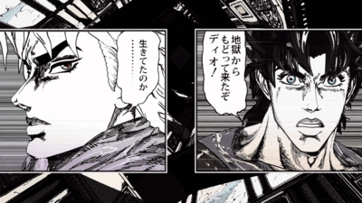

SONO CHI NO SADAME
Une musique à la hauteur de son oeuvre
Sono chi no sadame (directement traduit de “La destinée de ce sang”) est la première musique de la partie 1 de jojo’s bizarre adventure (parlé dans l’article “livre”). Composée par Kohei Tanaka et écrite par Shoko Fujibayashi, ces deux artistes sont déjà connues pour avoir créé des musiques d’anime extrêmement connu comme « We Are! » pour One Piece.
Le clip de la musique est assez contraire au “code des openings”. généralement les scènes présentées durant la musique d’ouverture sont des dessins en 2D de la série regardée. Hirohiko Araki en a decider autrement et a préféré y mettre des models 3D des protagonistes de son manga et c’est d’ailleurs ce choix qui fait parler sa musique au monde.
Quelques descriptions du clip
Le clip commence avec un montage de scènes de manga mettant en avant les six protagonistes de JoJo de la partie 6 a 1( Jolyne , Giorno , Josuke , Jotaro , Joseph et Jonathan ), chaque planche animé montrant au moins deux de leurs moments les plus mémorables. Lorsque Jonathan apparaît protagoniste de la première partie, il sort de son panneau, avant de frapper la caméra en un coup de poing, faisant apparaître le titre.